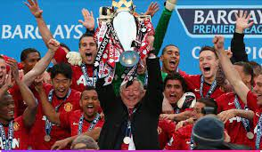
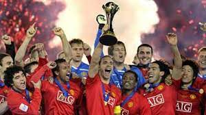
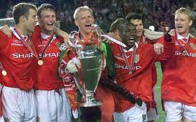
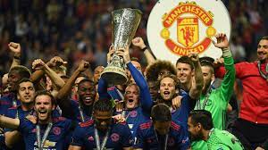

Manchester United Football Club adalah sebuah klub sepak bola profesional yang berbasis di Old Trafford, Manchester Raya, yang bermain di Liga Utama Inggris dengan gelar Liga Utama Inggris terbanyak sepanjang masa. Didirikan sebagai Newton Heath LYR Football Club pada tahun 1878, klub ini berganti nama menjadi Manchester United pada 1902 dan pindah ke Old Trafford pada tahun 1910. Manchester United telah memenangkan banyak trofi di sepak bola Inggris, termasuk rekor 20 gelar Liga, 12 Piala FA,6 Piala Liga dan rekor 21 FA Community Shield. Klub ini juga telah memenangkan tiga Piala Eropa, satu Piala UEFA, satu Piala Winners UEFA, satu Piala Super UEFA, satu Piala Interkontinental dan satu Piala Dunia Antarklub FIFA. Pada 1998-1999, klub memenangkan treble dari Liga Premier, Piala FA dan Liga Champions, prestasi belum pernah terjadi sebelumnya untuk klub Inggris. Manchester United merupakan satu klub terbesar di Liga Utama Inggris sepanjang masa.
Bencana Udara München 1958 merenggut nyawa delapan pemain. Pada tahun 1968, di bawah manajemen Matt Busby, Manchester United adalah klub sepak bola Inggris pertama yang memenangkan Piala Eropa. Sedangkan Alex Ferguson memenangkan total 38 gelar utama, dari bulan November 1986 sampai Mei 2013,ketika ia mengumumkan pensiun setelah 26 tahun di klub.Rekan senegaranya David Moyes diangkat sebagai penggantinya pada tanggal 9 Mei 2013 namun ia dinilai gagal dan tak lama kemudian dipecat. Manchester United adalah klub sepak bola terkaya ketiga di dunia untuk 2011–12 dalam hal pendapatan, dengan pendapatan tahunan sebesar €395.9 juta, dan kedua klub paling berharga tahun 2013, senilai $3.165 miliar. Pada bulan Januari 2015 lalu, Manchester United dinobatkan sebagai klub terkaya kedua di dunia,Ini adalah salah satu tim sepak bola yang paling banyak didukung di dunia. Setelah sahamnya tercatat di London Stock Exchange pada tahun 1991, klub itu dibeli oleh Malcolm Glazer pada Mei 2005 di kesepakatan menilai klub di hampir £800 juta. Pada bulan Agustus 2012, Manchester United melakukan penawaran umum perdana di Bursa Efek New York.
| Jumlah | Nama Gelar | Foto |
|---|---|---|
| 20 | Premier League |  |
| 1 | FIFA Club World Cup |  |
| 3 | UEFA Champions League |  |
| 1 | UEFA Europa League |  |